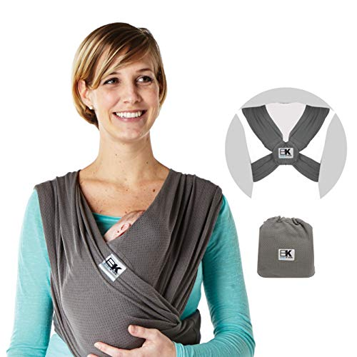
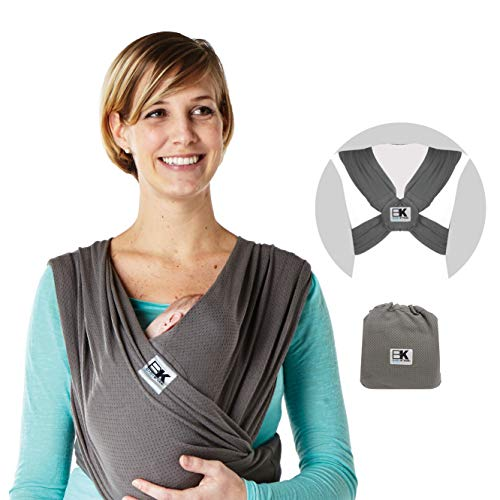
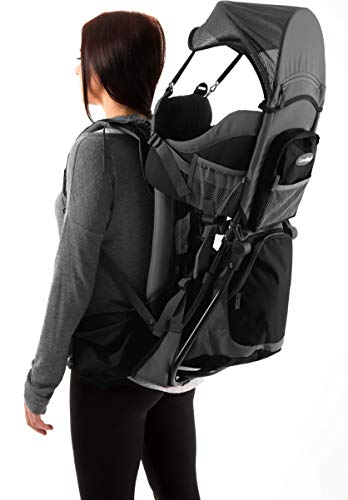
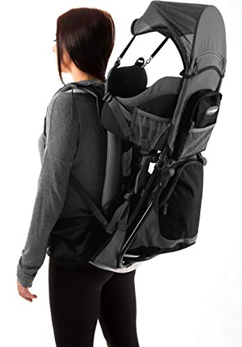
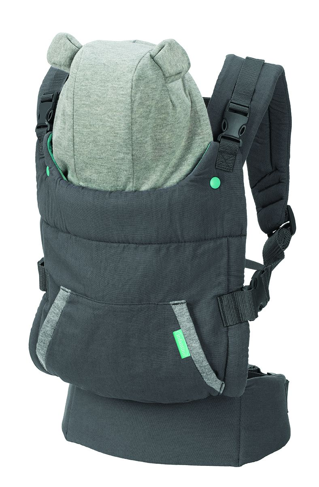
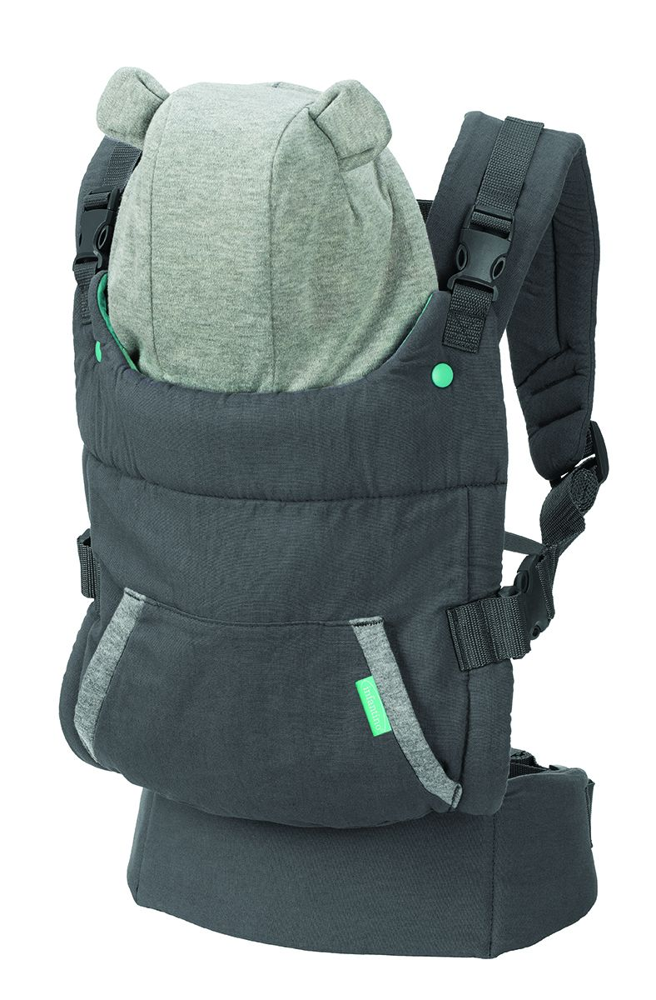
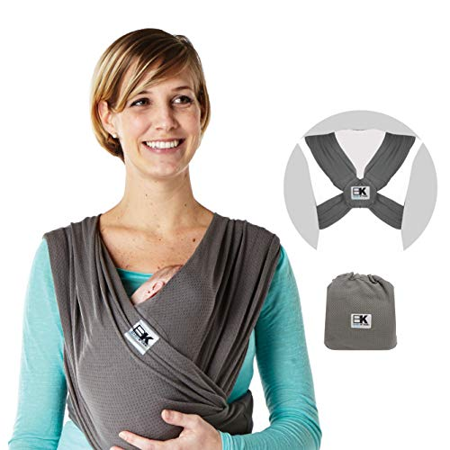
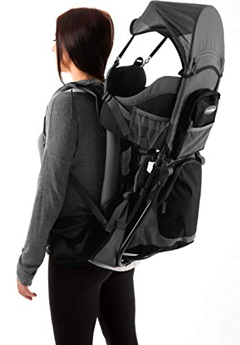
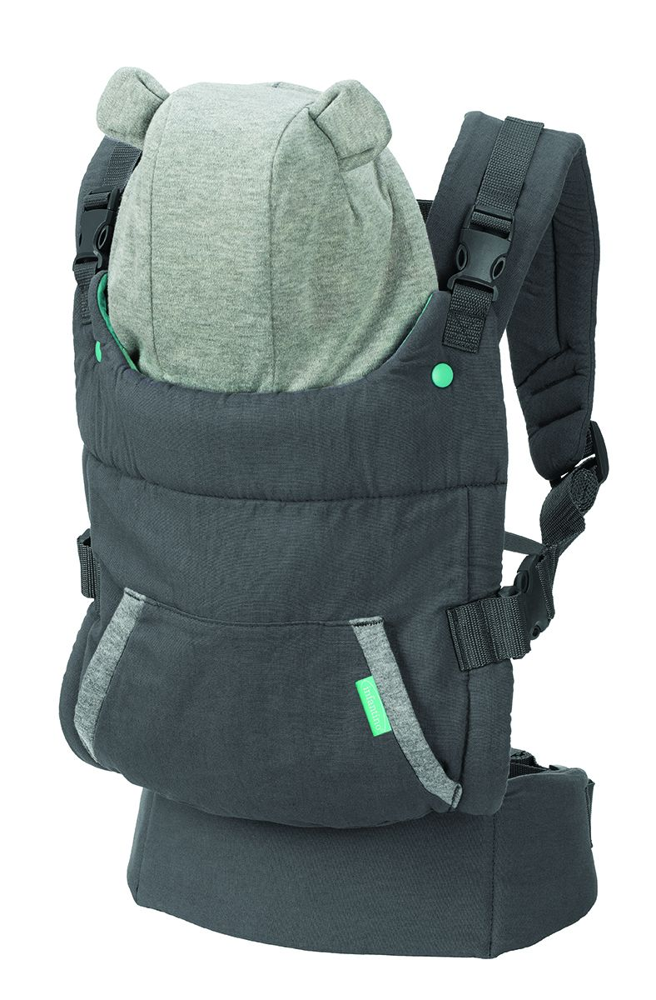

 

 

Carrying your baby helps develop a deep, secure mutual attachment. It allows both parents, or indeed any caregiver, to develop a deep bond with baby. It increases parental sensitivity to a baby's needs - you learn to interpret their noises and expressions so much quicker. It also promotes neural development, respiratory and gastrointestinal health, and aids in balance. Lets moms discreetly breastfeed on the go. Boosts breast milk production due to close contact with baby. Allows caregivers to be "hands-free" to get stuff done while still holding baby.


